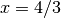
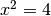
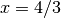
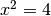
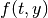

An Computational Apprach to Differnential Equations¶
Existance and Uniqueness of Solutions¶
The existence and uniqueness theorems in differential equations helps us determine if a solution to differential equation and if that solution is unique.
To motivate this example let us consider existance and uniqueness of solutions for simple algebraic systems. Consider has a solution for  exists, , which is also a unique equation. However, the quadtratic equation  has the solution
exists, , which is also a unique equation. However, the quadtratic equation  has the solution  . In this situation, the quadratic equatihas solutions that exist, but those solutions are not unique.
. In this situation, the quadratic equatihas solutions that exist, but those solutions are not unique.
Existance and Uniqueness Theorem. Given the initial boundary problem (IVP)
Exitance. If  is continuous in the region surrounding the initial value, , then we can define a rectangular region ,
that contains the point , then the IVP has a unique solution, y(t)
Uniqueness. If is continuous in the region then the IVP has a unique solution, y(t)